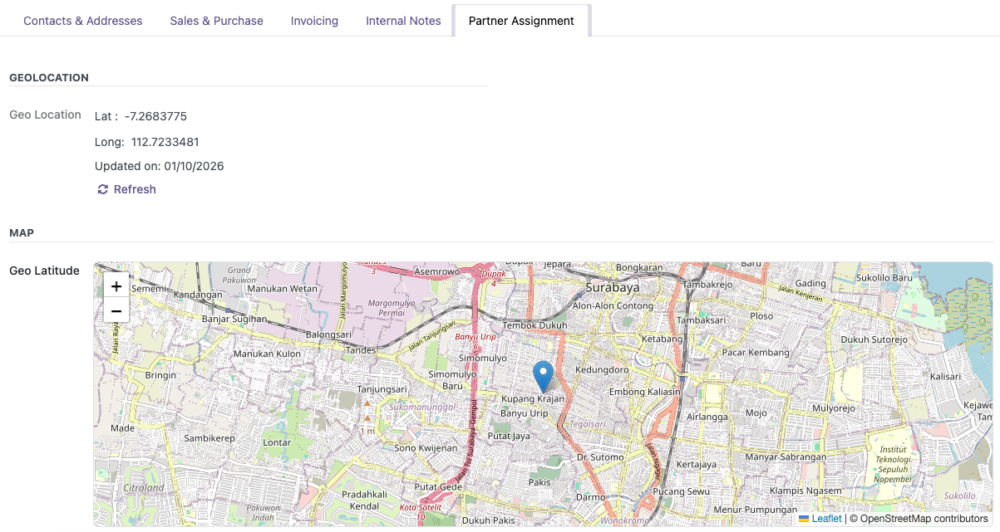

Partners Geolocation OpenStreetMap
Adds a map widget inside the partner form to display the partner location based on partner_latitude and partner_longitude.
partner_latitude
partner_longitude
base_geolocalize
web_maps